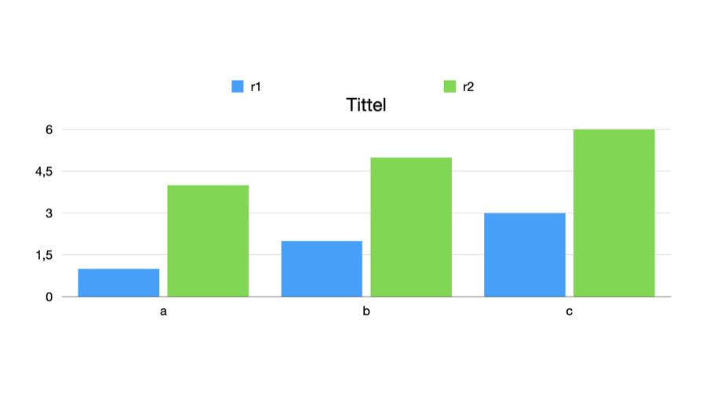

0298: Writing a chart's title and legend switches#
Status: run
0295 read a chart's title and legend switches from the Format sidebar's changes: fields 10000.21 and 10000.20 of the chart's type-5023 settings record. This experiment tests that reading from the other side, by writing the two fields into a file and letting Keynote show the result.
Setup#
| Keynote | 15.4 |
| macOS | 26.5.2 (25F84) |
| Date | 2026-11-10 |
| Input | samples/0297/baseline.key, a bar chart in the test theme with no title or legend |
| Writer | [recipes/0298-chart-switches.py](../recipes/0298-chart-switches.py), using the writer of 0287 |
Recipe#
mkdir -p samples/0298/images
cp samples/0297/baseline.key samples/0298/baseline.key
python3 -I recipes/0298-chart-switches.py samples/0298/baseline.key samples/0298/written.key title legendThe script follows the chart drawable's field 10000.10 to its settings record and sets 10000.21 = 1 and 10000.20 = 1, leaving everything else as it was. Keynote then opened written.key through AppleScript, exported the slide as a PNG image, and saved it again as resaved.key.
Observation#
Keynote opens the written file without a warning. The exported slide shows the chart with its title, Tittel, and a legend naming the two series, r1 and r2:

In resaved.key, the settings record still holds 10000.20 = 1 and 10000.21 = 1, as written.
Conclusion#
Field 10000.21 of a chart's type-5023 settings record shows its title and 10000.20 its legend, read in 0295 and now produced by writing. Nothing else in the file needs to change for Keynote to draw them: the default title text and the legend entries come from the app and from the chart's data.
Confidence#
Confirmed: 10000.21 is the title switch and 10000.20 the legend switch.